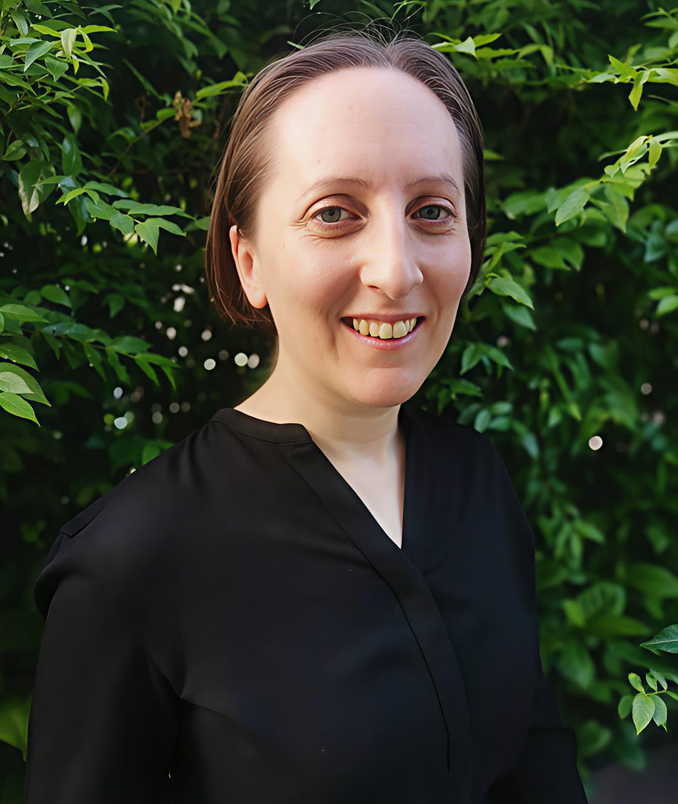

About
Forest Governance Lab is the independent consulting practice of Dr. Sophie Rose Lewis.
With over 15 years working across Southeast Asia, I specialise in forest governance, social forestry, resource rights and land tenure security — from the ground level through to policy.
I work with NGOs, governments, civil society organisations, Indigenous Peoples, and local communities, bringing both technical depth and practical understanding.
I focus on outputs that are high-quality, grounded, and actionable.
Services
Technical Writing & Editing
Producing and editing technical and communications outputs for diverse audiences — including proposals, concept notes, policy briefs, donor and programme reporting, knowledge products, synthesis reports, strategic plans, stories of change, case studies, and editing and proofreading.
Applied Research
Leading and delivering applied and participatory research — including FPIC processes, participatory action research, qualitative research, scoping studies, literature reviews, data analysis and synthesis, research reports, journal articles, and conference papers.
Policy Outreach & Advocacy
Designing and delivering research-to-policy engagement strategies — including stakeholder mapping, advocacy planning, stakeholder coordination and consultation, evidence communication, science-policy dialogue, and research-to-policy communications.
Strategic Planning & Advisory
Supporting organisations to translate vision into action — through multi-stakeholder strategic planning facilitation, programme design and inception, and theory of change, logframe, and results framework development.
Capacity Development
Building and facilitating capacity-development and training programmes for policymakers, researchers, NGOs, civil society, and community members — covering needs assessment, curriculum development, training design, field-based mentoring, and evaluation of learning outcomes.
Selected Experience
Timor-Leste · 2026
Strategic Planning & Technical Writing
Project concept note with log frame for an EU call for proposals to support the Directorate General of Forestry in Timor-Leste enhance institutional capacity for priority forestry projects.
Southeast Asia · 2024–2025
Policy Outreach & Gender Inclusion Capacity Development Coordination
Research-to-policy strategy across seven Southeast Asian countries for the Sida-funded Explore Programme, coordinating National Advisory Committees with government representatives, academics, and civil society.
Regional training and capacity-development programmes on Participatory Action Research, combining classroom training and field-based mentoring to strengthen science-policy engagement and governance reform.
Gender inclusion strategy, ensuring gender equity and representation across research teams, advisory bodies, and capacity-development initiatives.
Southeast Asia · 2024
Strategic Planning & Technical Writing
Draft Regional Multi-stakeholder Forestry Network – Asia (RMFN-Asia) Strategic Plan 2025–2030.
Bangkok · 2023
Applied Research & Technical Writing
Technical synthesis of sustainable forest management case studies across ten countries, examining two decades of change in forest management practices, tenure, policy, and community resilience for Revisiting Exemplary Forest Management: In Search of Excellence.
Southeast Asia · 2022–2023
Applied Research & Policy Advisory
Scoping study for the FCDO-funded REDAA programme, identifying strategic priorities for environmental restoration and sustainable natural resource management across Southeast Asia.
Thailand · 2022–2023
Applied Research & Technical Writing
Applied research and technical land and natural resource rights profile for Thailand's Trang region, analysing palm oil supply chain risks related to tenure insecurity and inequitable access for Indigenous Peoples, women, and customary tenure communities.
Thailand · 2020
Applied Research & Policy Outreach
FAO-EU-FLEGT funded applied research examining opportunities and barriers for Thai civil society engagement in Voluntary Partnership Agreement implementation, producing technical reports for the Thai CSO-FLEGT Network.
Publications
Exemplary forest management revisited – Insights from successes and challenges
FAO, Rome. Contributing author, pp. 19–31.
Safeguarding customary forest tenure in the Mekong Region: a legal analysis
Lewis, S.R., Faure, N., Leonard, S., Pen, R., Ba Ngai, N., & Phengsophaf, K.
Assessing forest governance in the countries of the Greater Mekong Subregion
Gritten, D., Lewis, S.R., Breukink, G., Mo, K., Dang, T., & Delattre, E.
Gritten, D., Greijmans, M., Lewis, S.R., et al.
Education & Research
Research and education
Bangkok · 2022–2024
Postdoctoral Research Fellowship, Faculty of Political Science
Qualitative field research on forest governance and land rights in Thailand, applying a political ecology framework to examine inequality in resource access under Thailand's Bio-Circular-Green Economic Model.
Vancouver · 2015–2021
Doctor of Philosophy, Forestry
Investigated forest governance in Thailand across two scales: how governance structures shape livelihoods and resource access of Karen Pwo Indigenous communities adjacent to protected areas; and how competing actor interests influenced the reform of timber legality and smallholder tenure through Thailand's EU-FLEGT Voluntary Partnership Agreement process.
London · 2008–2009
Master of Science, Forest Conservation
Reviewed literature and surveyed 26 EU states to assess climate change adaptation strategies for protected forests, providing policy recommendations for biodiversity policy.
Contact